This page provides some notes about one of the programs in the examples directory, namely flowterm. It is an experimental replacement for terminal emulator programs like xterm and konsole.
The program presents one or more tabs to the user, each of which contains an independent shell process. Each tab contains a split pane. To the left (or top if so oriented), is a list of the contents of the shell process’s current directory. To the right (or bottom) is a fairly conventional terminal emulator, albeit one with some important extensions.
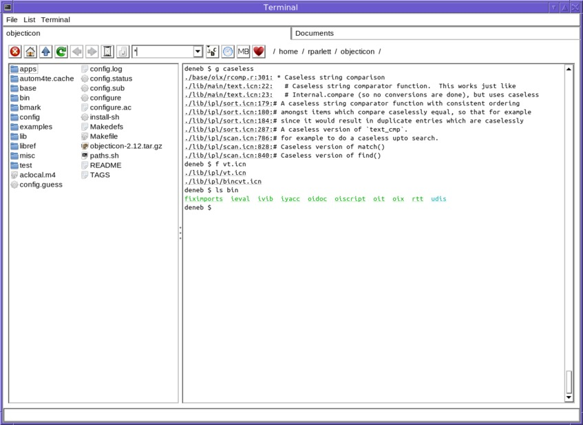
The most significant thing that flowterm does differently to conventional terminal emulators like xterm, is the provision of clickable hyperlinks to files and other objects. For example, look at the following image, showing the output of ls.
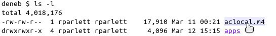
As the mouse pointer moves over the filename output by ls, the mouse pointer changes and the link is highlighted. Left-clicking on the link opens the system-registered application for viewing that particular file type; right-clicking brings up a context menu, and middle-clicking inserts the filename into the terminal.
This effect is achieved by a combination of two things. Firstly, the terminal emulator understands special escape sequences which encapsulate file links in much the same way as a web browser understands HTML anchor tags. Secondly, a small collection of programs, including ls, have been modified to produce these special escape sequences, and thus provide the desired links in the terminal. To continue the web analogy, if the terminal is the browser, then these programs are the equivalent of web servers, but instead of producing HTML containing anchor tags, they produce their normal textual output, but containing embedded link escape sequences.
The modified programs include ls, grep and find. Although the selection of programs cannot be complete, it is large enough to considerably improve the usability of the shell.
These modified programs are provided in a separate download; the section flowterm extras below explains more.
Another frustation of using the shell which flowterm tries to address is filename completion (in fact completion in general, not just files). Users of bash will certainly be familiar with how annoying its completion facility can be. To alleviate this distress, another escape sequence is employed, and bash is modified to send this escape sequence when tab completion occurs (in fact, bash is not modified, rather its readline library, which is statically linked into it, is modified instead).
With this modification, a popup list appears to implement tab completion, as shown in the following image :-
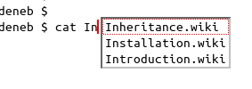
The user may now use the mouse or the cursor keys in order to select from the list in the normal way.
The various items in the toolbar should be mostly self-explanatory.
Going from left to right, we have the close tab button, the goto home directory button, go up one level button and refresh directory button.
Then come buttons to go backward and forward in the history, and to display the history as a drop-down list (the egg timer icon).
Next is the “columns focus” button, which is a toggle button. When set, it allows the list to take the keyboard focus. The cursor keys can then be used to navigate, and the return key used to “open” the currently selected item (equivalent to left-clicking).
The drop-down edit list is a filter, which restricts the files (and optionally directories) on view in the list. The contents of the drop-down provides a convenient list of file extensions in the current directory.
The three buttons to the right of the filter drop-down are used to control the sort used in the list, which is by default alphabetic in descending order. The small arrow in the corner of the button indicates which sort is in use, and whether it is ascending or descending. Clicking on the button with the arrow toggles the order between ascending and descending, whilst clicking on one of the other buttons sets the sort to the corresponding button, leaving the order unchanged.
Next to the sort buttons comes the favourites button. This is a list of directories, which can be edited via the “Favourite dirs…” item in the File menu.
Finally, to the right of that comes the file trail. This shows the current directory. Clicking on one of the file names in the trail changes the directory. Also, clicking on one of the slash separators pops up the list of directories for that location. Selecting from one goes to that directory. The following image shows that in action :-
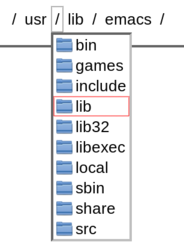
Right-clicking on one of the entries brings up the file context menu.
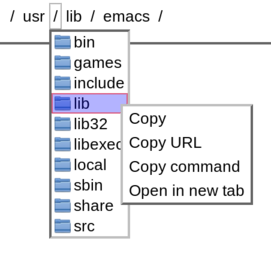
Both the file list and terminal portions of the tab have popup menus. They appear either by clicking in an area without links, or via the menu bar at the top of the window.
The terminal menu is shown below.
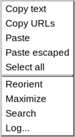
The first five items relate to copy and paste. “Copy URLs” will be present if there are any links in the selected area; they may be copied to the clipboard (with a mime-type of “text/uri-list”) using this option. “Paste escaped” is the same as “Paste”, but applies shell escaping to the pasted text. Reorient toggles the horizontal/vertical orientation of the split. Horizontal orientation is especially useful if you have a directory containing many very long file names. The “Maximize” option makes the terminal take up all of the tab’s space. After a maximize, a “Restore” option is shown, which restores the split to the usual dual view. “Search” opens a text entry box at the bottom of the window, allowing the terminal scrollback text to be searched. “Log” asks for a file name and thereafter copies all data received from the tty driver to the log file. Whilst logging is active, the text color in the tab title changes to a dark orange, to act as a reminder, for logging can of course consume considerable disk space. For information about processing log files, see below.
Custom entries may be appended to the terminal menu if desired.
The file list’s popup menu is as follows :-
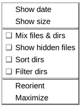
The first two items indicate that the date or size should be shown alongside the name. To reduce clutter, this is only applied to directory entries if the “Sort dirs” or “Mix files & dirs” option is checked. “Mix files & dirs” means sort and display files and directories together; normally directories come first. “Show hidden files” is self-explanatory. “Sort dirs” means apply the same sort to directories as to files; normally they are just sorted by alphabetical order regardless of the sort option selected in the toolbar. “Filter dirs” means apply the filename filter to directories as well as files. The “Reorient”, “Maximize” and “Restore” options have the corresponding effect for the list pane as for the terminal pane.
When a URL link (or an entry in the file list) is right-clicked, a file context menu such as the following is shown. Some entries may not appear, depending on the type of the link. The clicked URL turns red.
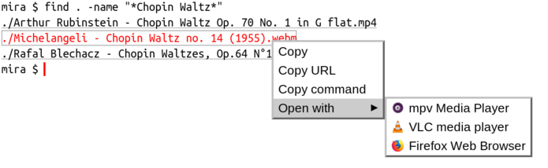
“Copy” will copy the filename to the clipboard. No escape characters are added, so to paste this into the shell, use the “Paste escaped” option described above. “Copy URL” copies the source URL to the clipboard. “Copy command” copies the text of the shell command that a left-click would run, to the clipboard. “Open with” is a submenu listing all of the system’s dekstop applications which can recognise this file or URL type.
Within the “Open with” submenu, middle-clicking inserts the command text into the terminal, whilst right-clicking brings up a further menu option, “Copy command”, to copy the text of the shell command for that particular entry. After a middle-click, the command can of course be edited (perhaps to add a command-line flag), before being run. But this has a downside, namely that it will run the command within the shell, and therefore occupy the shell. To neatly detach the command from the shell, I have found the following bash definition to be useful :-
# Run a command in the background with i/o set to null, and setsid
function q {
setsid -f "$@" </dev/null &>/dev/null
}Then, to detach a command from the shell, simply prefix the command line with “q”; for example :-
$ q mpv --player-operation-mode=pseudo-gui -- /tmp/Movie.mkvRight-clicking on a tab header brings up the following context menu :-
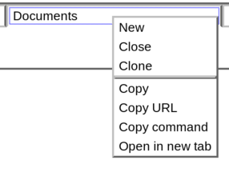
“New” opens a new tab with default settings in the tab to the right of the one clicked. “Close” obviously closes the tab, and “Clone” opens a new tab to the right of the one clicked, but reproduces as much of that tab’s settings (history, current directory and so on) in the new tab as possible.
The other items, under the separator, provide the standard file context menu for the current directory of the tab.
Apart from the places just mentioned above, the file context menu also appears on a right click in several other places as well :-
Generally speaking, wherever it is possible to right click on a filename and get the file context menu, it is also possible to middle click and insert the shell-escaped form of the file path. For the sake of brevity, the path inserted is a relative one if is below the current directory, but the absolute path can be inserted instead if either alt key is held down whilst pressing the middle button.
To take an example of how this might be used, suppose that you have two tabs open and wish to copy a file from the directory of one to the directory of the other. In the first tab, you could type “cp” and then middle click the source file in the file list, and then middle click on the second tab’s tab header to insert the destination directory, and then press return.
When moving the mouse in the terminal, if either control key is held down then links are not recognized. This enables the text inside the links to be copied.
In both the file list and the terminal it is possible to do a multi-file insert using the middle mouse button. The first file is inserted using a middle click as described above. A second middle click, this time with the shift key held down, will insert all the files between the first and the second. For example, suppose we have the following situation and wish to copy the four “Chopin” files to another directory :-
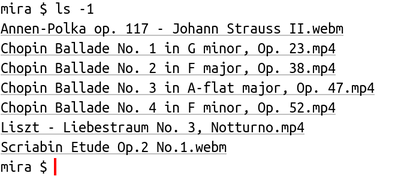
Firstly, we type “cp” and then middle click on the first file. This results in :-
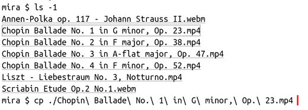
Secondly, we middle click again, this time with shift held down, on the last file. The result :-
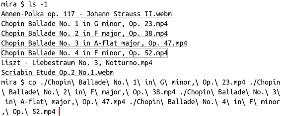
It then just remains to provide the destination directory (perhaps by way of another middle click).
A alternative way of achieving the same thing is to select the region including the desired files, and then copy the URLs to the clipboard, thus :-
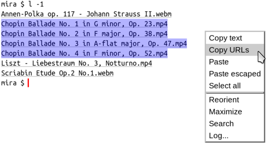
The URLs can then be pasted by selecting the context menu’s “Paste” option; the result is the same as before. This technique has the advantage of allowing the files to be pasted into another tab.
This is a collection of common utility programs, modified to provide output containing escape sequences recognised by flowterm. For example, a version of ls is provided which turns each file output into a clickable link to a file: URL.
To build the flowterm-extras programs, proceeds as follows.
Firstly, download the .tar.gz file, from the following link :-
It is best to extract this file in your home directory, since it will then be found automatically by flowterm. (If you extract it somewhere else, then you will need to provide the -x option to tell flowterm where).
In any case, extract it as follows :-
tar xfz flowterm-extras.tar.gzThis will create a flowterm-extras directory. Cd into that directory, and run
./build.shA considerable amount of output will be produced, but if everything was successful, the message “Finished OK” will be printed. In that case, a directory bin will have been created, containing the resulting executables. The build.sh script doesn’t actually install anything outside of its directory, which can simply be deleted if you no longer have any use for it.
There are several special escape sequences recognised by the terminal, as follows.
This takes the form
\e[!"url"Lvisible-text\e[!Lwhere \e is the escape character (ascii 27), url is a URL, (with the normal percent encoding), and visible-text is the text which appears on the screen to represent the clickable URL. In fact, the above actually represents two separate escape sequences; the second comes after the visible-text, in order to denote its endpoint. If you’re familiar with HTML, then you will see the similarity with an anchor tag. The first escape sequence mirrors the opening <A HREF=URL> tag, and the second the closing </A> tag, whilst visible-text fulfils the same role as the content between the tags.
Most URLs in these escape sequences will be file URLs, but as explained below, other types of URLs, including custom ones, are allowed too. These can be particularly useful when they are placed in simple “favourites” files which, when printed to the terminal, provide a selection of clickable links to launch applications, open new tabs, and so on.
Some examples of a link escape sequences are :-
\e[!"file:///some/file/or/other.txt?line=120"LA file with an associated line number\e[!L
\e[!"http://www.google.com"LA link to google\e[!L
\e[!"launch:konqueror"LOpen konqueror\e[!LI recently came across this page :-
https://gist.github.com/egmontkob/eb114294efbcd5adb1944c9f3cb5feda
which puts forward some similar ideas to those contained in flowterm. The link escape sequence described therein has found its way into ls via a new option --hyperlink. Flowterm recognises this escape sequence, and the latest version of ls in flowterm-extras makes use of it, by automatically selecting the new option if links are required.
This escape sequence is used to provide a more friendly and usable name completion system. The sequence takes the form :-
\e[!"k1";"i1";"k2";"i2";"k3";"i3",....,"kn";"in"PIn other words, there are n pairs of string parameters. All parameters are URL encoded. On receipt of this escape sequence, the terminal pops up a list, showing each of the k parameters. When one is selected, its corresponding i parameter is sent to the output, as though it had been typed.
Unlike the link escape sequence, this sequence only really makes sense when it is generated by a program.
The escape sequence
\e[9Jis a non-standard addition, which clears the terminal scrollback history.
The escape sequence
\e[7Kis also a non-standard addition. It is the same as a normal erase-right command (\e[K), but works differently if a character has just been written to the last column. In the jargon of the VT-100, we are then in a special state with the “last column flag” set. At that point a normal erase right will erase the character in the last column. This custom escape sequence will not. (It is a “no-op” in this case).
This escape sequence is used in the versions of ls and grep in flowterm-extras in order to work around bugs in the colour output code of those two programs, which can lead to garbled results. The problem is that both these programs normally use \e[K, without fully comprehending its semantics. To see a typical example of the problems thus caused, consider this screenshot of an interaction in a linux console terminal :-
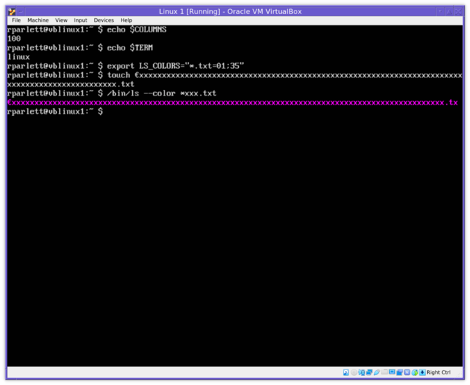
Note how the file just created has had its name truncated by one character, caused by a \e[K in just the wrong place. grep suffers from the same problem; see https://invisible-island.net/xterm/xterm.faq.html#grep_colors for more information.
A file URL has the following syntax :-
file://[host]/path[?line=line-no[&col=col-no]]If the path (which includes the / to its left), is a directory then clicking on the link sends a cd command to the shell process in order to change its current working directory.
Otherwise, the file associations database is searched to find an application to launch to view the file. If found, then the application is launched by forking a new process.
The optional host element is just used to check whether the URL refers to a file on the host running flowterm. If not, then there is no point trying to launch an application for it, and an error message is shown in the message bar.
The optional line and col parameters may be passed to the application if its desktop entry file contains an entry ExecLine=..., as opposed to the normal Exec=.... The ExecLine string may contain the following escape sequences (termed “field codes” in the freedesktop specification) :-
%L - substitute the line number if given.%C - substitute the column number if given.%P - subtitute “line:col” if both are given; otherwise just the line number, if given.These field codes, and the ExecLine entry are entirely non-standard unfortunately, so you must create your own .desktop file in order to make use of them. An example which I use to launch emacs is :-
[Desktop Entry]
Version=1.0
Encoding=UTF-8
Name=GNU Emacs
GenericName=Text Editor
Comment=View and edit files
MimeType=text/plain
Exec=emacs %F
ExecLine=emacs +%P %F
Icon=emacs
Type=Application
Terminal=false
Categories=Utility;Development;TextEditor;
InitialPreference=20This is placed in my ~/.local/share/applications directory. The effect of launching this desktop entry file with the URL
file:///home/rparlett/prog.c?line=124is then to launch the program
emacs +124 /home/rparlett/prog.cA launch URL has the following syntax :-
launch:command-string[?wd=working-dir]Both command-string and working-dir portions are URL encoded. When clicked, a launch URL forks a new process, sets its current directory to working-dir (or the user’s home directory if working-dir was omitted), and then runs command-string, which may include bash shell syntax.
An example of a launch URL is :-
launch:qemu-system-x86_64 -hda ubuntu.img -m 3G -vga vmware?wd=/mnt/disk/qemu-stuffMiddle-clicking on a launch URL inserts the command string into the terminal, to allow it to be edited before being run.
A text URL has the following syntax :-
text:stringThe string is URL encoded. The effect of clicking on such a link is simply to send the string to the input of the forked shell process. In other words, the effect is the same as if the string had been typed at the keyboard.
An example might be :-
text:hello worldIf we were to click on a link with this URL, then “hello world” would be sent to the shell process, which would then echo it back so it appeared on the screen (unless it was running a command at the time).
A run URL has the following syntax :-
run:command-stringThe command-string is URL encoded. The effect of clicking on such a link is, like a text URL, simply to send the string to the input of the forked shell process, with a carriage return appended, causing the command to be run (unless the shell process is doing something else).
An example :-
run:ps -aClicking on a link with this URL would run the command “ps -a”.
Note that the difference between a launch URL and a run URL is that a launch URL forks a new process which runs independently of the shell, whilst run just sends the command string to the shell for execution as though it had been typed at the keyboard.
Middle-clicking on a run URL behaves in a similar way to the launch URL.
A tab URL enables new tabs to be opened and configured when it is clicked. It has the following syntax :-
tab:arg1[;arg2][;arg3]...Each “argument” is URL encoded. Each argument is either a directory name, which opens a new tab with that directory as a starting point, or a string beginning with “:” which configures the tab just opened using a tab option, as described below. An empty string argument just opens a new tab, without setting its directory. If any configuration options come before a directory argument, then they apply to the currently selected tab.
An example of a tab URL is :-
tab:/mnt/disk/films;:reorient;:sort-date;:selectWhen clicked, this URL opens a new tab, changes its directory to /mnt/disk/films, toggles the orientation of the split, sets the sort to date order, and selects the tab.
Another example is :-
tab::re-orientThis doesn’t open a new tab, because the first item after the tab: is a tab command (ie it begins with a :), so it operates on the current tab, and reorients the split setting. URLs like this can be quite useful when linked to custom key settings.
This is rather like tab:, but clones the current tab’s settings in a new tab. Then, any additional given tab commands are applied to the new tab. The syntax is :-
clone:cmd1[;cmd2][;cmd3]...For example :-
clone:adjacent;selectNote that, unlike tab:, the commands shouldn’t be prefixed with ‘:’ (as they don’t need to be distinguished from directories).
All other URL schemes are handled by looking up the desktop entry matching the mime type x-scheme-handler/[scheme]. The matching application is then launched in a forked process.
It is very easy and useful to create small shell script files which simply output links which can be clicked on. These links can be file: URLs, in order to change to particular directories, or launch specific files. They could also use some of the custom schemes mentioned above, which can launch applications, open new tabs, and so on.
For example, if I created the following file, called it favs, and put it somewhere on my path (and made it executable)
#!/bin/bash
cat <<EOF
\e[!"tab:/mnt/sg1/music;:reorient;:sort-date;:mix-entries;:select"LMusic tab\e[!L
\e[!"launch:qemu-system-x86_64 -hda some.img -m 3G?wd=/mnt/qemu-stuff"LAn emulation\e[!L
\e[!"launch:xterm -e ssh rparlett@somehost"Lssh to somehost\e[!L
\e[!"file:///tmp"Lcd to /tmp\e[!L
EOFthen whenever I typed favs at the prompt, the above links would be printed, and I would simply have to click on one of them to perform the desired action.
Note that creating the above file with a text editor does present one problem, namely how to input the escape character (ascii 27), shown in the above as the two characters \e. In emacs, this character can be input by typing control-q, and then pressing the escape key.
As an alternative to using cat, one can also simply use a sequence of echo commands. The above file could then be written as follows :-
#!/bin/bash
echo -e \\e[!\"tab:/mnt/sg1/videos/music\;:reorient\;:sort-date\;:mix-entries\;:select\"LMusic tab\\e[!L
echo -e \\e[!\"launch:qemu-system-x86_64 -hda some.img -m 3G?wd=/mnt/qemu-stuff\"LAn emulation\\e[!L
echo -e \\e[!\"launch:xterm -e ssh rparlett@somehost\"Lssh to somehost\\e[!L
echo -e \\e[!\"file:///tmp\"Lcd to /tmp\\e[!LNote that the escape character is written as \\e (no awkward key entry is needed), and double quotes (") and semicolons need to be escaped.
One problem that faces programs that output the special link and popup escape sequences (such as the flowterm-extras programs), is the question of what kind of terminal the program is connected to. It is obviously undesirable to output these escape sequences on a conventional terminal, since the output will be garbled. However, detecting the type of the terminal is awkward. Therefore, a simple environment variable, FLOWTERM, is used by programs to determine whether or not to output the special escape sequences. The following values are used :-
The last option can be useful when using a pipeline. For example, assuming FLOWTERM is 1, the output of
ls -t | headwill not contain escape sequences, since ls will detect that its output is a pipe, rather than a tty. (For the same reason, if you use colour ls output, you won’t see colours either).
To fix this, set FLOWTERM to 2 when invoking ls, thus :-
FLOWTERM=2 ls -t | headIf this seems a little verbose, a bash alias can reduce typing. Place this in your bash startup file :-
alias f2='FLOWTERM=2'and then you can use :-
f2 ls -t | headThe terminal emulation is missing a few features which are found in xterm :-
The file handling parts of the program, including the file list and the file trail, assume UTF-8 encoding of filenames, and will ignore files in other encodings.
The insertion of shell-escaped strings (for example on a mouse middle-press of a filename) assumes a shell that is compatible with bash’s escape syntax. This includes zsh, and ksh, but csh isn’t compatible unfortunately. Nor, oddly enough, is bash run in its sh-compatible form (ie, started with the command sh). The $'\ch' escape combination appears to be a bash-ism.
The coordination between the file list and the terminal emulator also has some limitations. The list’s current directory is kept synchronized with the shell process’s current directory (on Linux this is read from the file /proc/<pid>/cwd, where pid is the shell process’s process id). This means that the list doesn’t synchronize with a sub-shell process. For example, if you start another shell program, such as zsh, as in
bash $ zsh
$ cd /tmpthen the list won’t synchronize to /tmp, since the original bash process is still in whatever directory it was in when zsh started. If you know you won’t return to bash, you can instead type
bash $ exec zsh
$ cd /tmpThen it will work as desired, since zsh has taken over (and replaced) the bash shell’s process.
The screen program also suffers from the same problem, since it starts its own processes. Also, since it implements its own internal terminal emulation, it cannot understand understand the special escape sequences used by flowterm. Therefore it is desirable to set FLOWTERM to zero (or unset it) before launching screen.
$ FLOWTERM=0 screenIn view of these limitations, there is in fact no advantage to running screen in flowterm, and it may just as well be started in a conventional terminal emulator program :-
$ FLOWTERM=0 xterm -e screen &Tab options are string commands used to configure or control particular tabs. They can be used in four places :-
flowterm is started.tab: URL, to configure and open a new tab, or modify the current tab.The following tab options are allowed. Parameters are optional for some commands. A null value is specified by omitting the parameter. Commands taking a FLAG (yes/no) parameter typically toggle their setting when the parameter is omitted. So for example :max_term will toggle the maximized state of the terminal, where as :max_term=on will just maximize it.
sort-name, but sort by date (newest first is “no”, oldest first is “yes”).sort-name, but sort by size (biggest first is “no”, smallest first is “yes”).:sh-arg.:sh-var.:filter.:fav-dir.The following commands only apply to the currently active tab (not new tabs).
N, also open sub-menu index N.:send_tty (or one of its variants :run and :string).The font used in the terminal may be configured using the :font tab option described above. This changes the font in the current tab, or configures the font for a new tab. The default if no configuration is made is the font “fixed”.
Font settings should use the font description syntax described here. There are also some limitations :-
When specifying a font family other than one of the standard Icon names, it is helpful to append the “mono” attribute; this will help select a monospace font for the default, bold and italic faces :-
flowterm ":font=Source Code Pro,mono"flowterm accepts the following command-line options :-
flowterm-extras directory; by default flowterm-extras in your home directory. This directory’s bin subdirectory is added to the front of the PATH variable.PATH. The -x option is ignored.In addition to these options, one or more tabs can be configured on the command line. Passing a directory name as an argument will add a new tab with that directory as a starting point. Passing a string beginning with “:” will then configure that tab using a tab option. Arguments beginning with a “:” that come before the first directory are applied to all tabs, except those that are cloned from other tabs.
For example, the following example starts the program with four tabs with various options :-
flowterm :fg=blue :font=typewriter \
~ :title=Home \
~/objecticon \
/mnt/disk/Documents :reorient :sort-date :mix-entries \
/mnt/disk/Music :reorient :sort-dateNote that the first two options (configuring foreground colour and font), will apply to all four opened tabs (and any new tabs added later).
The :key tab option is used to make custom key settings. The syntax is :-
:key=KEY,BITS,MASK,COMMANDKEY specifies the key, and must take one of three forms :-
x<digits>; eg x11 x3, etc.u<digits>; eg u20ac, orgraphics.Key class; eg F1, PGUP, etc.To decide which of the above to use, try running the grabtest example program, and typing the key. The event code is shown in the window, and will either be a string, a ucs string, or a key code.
BITS and MASK both take the same format, and specify which modifier key or keys is to be held down (or not) for this key binding. Exactly those keys in BITS among those in MASK must be down. The format is a string consisting of the following characters :-
* : Equivalent to CSM45, ie all modifier keys.For example, the combination C,CS would mean the control would be down, and the shift key would not be down, and the state of the meta keys is ignored.
When several settings are made on one key, an error is signalled if they are inconsistent; ie more than one could match a particular key combination. For example the two combinations S,S and CS,CS are erroneous since both match the case when control and shift are down. A correct version would use S,CS for the first one.
The grabtest program also shows which modifiers are set when a key is pressed.
COMMAND is one of the tab options listed above, but without the : prefix. The command is applied when the key is pressed.
To clear all settings for a particular key, use the form
:key=KEYTo clear one particular setting matching a particular bit/mask combination, use
:key=KEY,BITS,MASKFinally, to reset the key table to its default (empty) form, use
:reset-keysThis would be useful if, for example one used default settings for the function keys, but wanted a tab which didn’t have those settings, perhaps to run a particular application that had its own use for the function keys. This tab would be opened via a tab: URL like
tab:;:reset-keysHere are some examples of custom key settings, shown using bash shell syntax for escapes and quotes, where necessary. To experiment, just run flowterm with the setting as a parameter and try pressing the key.
Copy to clipboard when F10 is pressed.
:key=F10,0,0,copyQuit the program on control Q. x11 means string character 17 (decimal), which the grabtest program shows as the key code generated on control Q.
:key=x11,C,*,quitAs above, but instead use “q” and either Windows key. grabtest indicates this combination produces a code of “q” (ascii 112) with the meta4 flag set. A conversion to hex gives x71 for the key, whilst 4 is the code for meta4 (see the table above).
:key=x71,4,*,quitLaunch xterm when F9 is pressed.
:key=F9,0,*,url=launch:xtermOpen and select a new tab on shift F9, with directory /tmp and horizontal split orientation. Note this one requires shell quotes around it because of the semicolons.
":key=F9,S,*,url=tab:/tmp;:reorient;:select"Copy to clipboard when F10 is pressed, and show a message in the status bar. This shows how to do several actions on a single key, by using a tab: URL.
":key=F10,0,*,url=tab::copy;:info=Copied"Run the command ls -l when F9 is pressed.
":key=F9,0,*,run=ls -l"Another way to do this would be
:key=F9,0,*,url=tab::send-tty=ls%20-l%0Da URL is used since they are percent encoded, and this allows the space and carriage return to be easily specified.
Maximize and focus the file list, as a toggle, with F1.
":key=F1,0,*,url=tab::max-list;:list-focus"Send control-C when the Pause button is pressed. The “$’” shell syntax lets us use bash’s “\x” escape sequence.
$':key=PAUSE,0,*,string=\x03'Send control-S when the Pause button is pressed, control-Q when shifted Pause is pressed. Two separate :key commands are needed.
$':key=PAUSE,0,*,string=\x13'
$':key=PAUSE,S,*,string=\x11'Run a command to clear the screen when F9 is pressed.
$':key=F9,0,*,run=echo -n -e \'\\e[2J\\e[H\''Move left and right through tabs with F9. Again, two commands are needed.
:key=F9,S,*,tab-left
:key=F9,0,*,tab-rightProvide movement within the terminal history with shifted page up, down, home and end. This needs four commands.
:key=PGUP,S,*,pgup
:key=PGDN,S,*,pgdn
:key=HOME,S,*,top
:key=END,S,*,bottomProvide copy and paste on control-insert and shift-insert respectively. This is a setting commonly found in other terminal emulators, and needs two commands.
:key=INSERT,C,*,copy
:key=INSERT,S,*,pasteThe :terminal-menu :list-menu and :misc-menu tab option allows custom menu items to be appended to the terminal menu, the list menu and the “Misc” menu, respectively. The syntax for each follows the same form; for example :-
:terminal-menu=LABEL,COMMANDLABEL gives the label of the menu entry. It may contain “/” characters, in which case a path of sub-menus is indicated, with the last element being the name of the actual entry. A name of “-” declares a menu separator.
Just like for :key, COMMAND is one of the tab options listed above, but without the : prefix. The command is applied when the menu entry is selected.
Here are some examples of custom terminal menu items. Again, they are shown using bash shell syntax for escapes and quotes, where necessary. To experiment, just run flowterm with the setting as a parameter and try right-clicking in the terminal area.
Create a separator and a menu entry “Home”, to go to the home directory.
:terminal-menu=- :terminal-menu=Home,homeAn entry to run a command to clear the screen and the scrollback history.
$':terminal-menu=Clear,run=echo -n -e \'\\e[9J\\e[2J\\e[H\''A variant of this might be :-
$':terminal-menu=Clear,run=echo -n -e \'\\e[9J\';clear'An entry to run the “reset” command.
:terminal-menu=Reset,run=resetTwo entries in a sub-menu to run commands.
:terminal-menu=Cmd/Reset,run=reset :terminal-menu=Cmd/Clear,run=clearAn entry to launch two xterms.
":terminal-menu=Xterms,url=tab::url=launch:xterm;:url=launch:xterm"here the first url is used so that two commands can be done with one menu entry. The next two url commands each activate a launch: url.
Here is my own personal flowterm startup script. It opens tabs in various directories, including, of course, ~/objecticon!
#!/bin/bash
OI_FLOWTERM_LIST_FOCUS_WIDTH=2 \
~/objecticon/examples/bin/flowterm \
-t $HOSTNAME \
-width 125 \
-height 45 \
:key=INSERT,C,*,copy \
:key=INSERT,S,*,paste \
:key=PGUP,S,*,pgup \
:key=PGDN,S,*,pgdn \
:key=HOME,S,*,top \
:key=END,S,*,bottom \
:key=F1,0,*,log=/tmp/log \
:key=F2,0,*,clone-tab \
:key=F3,0,*,close-tab \
:key=F4,0,*,open-history \
:key=F5,0,*,tab-left \
:key=F5,S,*,move-tab-left \
:key=F6,0,*,tab-right \
:key=F6,S,*,move-tab-right \
:key=F7,0,*,prev \
:key=F8,0,*,next \
:key=F9,0,*,up \
:key=F10,0,*,copy \
:key=F11,0,*,paste \
:key=F11,M,*,paste-alt \
:key=F12,0,*,open-favourites \
:key=SCROLL_LOCK,0,*,list-focus \
:key=PAUSE,0,*,reorient \
:key=MENU,0,*,open-menu=1 \
/tmp \
$OI_HOME
Flowterm uses Object Icon’s xdg package for several things, including :-
The above-linked page also explains how to customize the underlying XDG database; for example you may wish to change the application launched for a particular type of file.
After making any changes to the underlying database files, please remember to select the menu option “File/Refresh XDG” to ensure that the changes are recognized.
Several programs which complement flowterm can be found in the examples directory. They are described below.
fl - Working with programs that don’t output linksfl can be used to make it easier to work with programs that output filenames, but as simple text, rather than flowterm links. fl can be used to effectively retro-fit these programs into the flowterm way of doing things. fl takes one or more filenames as arguments, or reads from standard input otherwise. It copies the input to the standard output, but along the way it tries to detect any filenames, or URLs. As it finds these it turns them into flowterm links in the output.
For example, consider the command svn status -q. This might output something like the following :-
$ svn status -q
M misc/one.icn
M test/two.c
M util/MakefileIn order to turn the filenames into links, the output can be piped through fl :-
$ svn status -q | flThe result will be the same as above, but the three files will now be clickable links.
fl is not perfect, however. It won’t detect filenames with spaces in, or in quotes. But it is very useful nevertheless.
ern - Renaming filesRenaming files using the standard mv command can be rather awkward, especially with files containing spaces and other escaped characters. ern, meaning “edit and rename”, uses a dialog to edit the existing file name, and then renames the file. It also outputs a link to the renamed file.
plain - Processing log filesLog files (captured using the “Log” option in the terminal menu) contain a copy of the raw data received from the operating system’s tty driver, including all of the escape sequences to be processed by the terminal emulator. These escape sequences can make a log file difficult to use for other purposes; plain processes and removes them and outputs the result to its standard output. plain takes one or more filenames as arguments, or reads from standard input otherwise.
note - Storing linksnote, can be used to store a list of URLs. It works a little like the clipboard, but its data is stored in a file. URLs can be added with note add (usually by middle clicking on links). Alternatively, several URLs can be added at once from the clipboard with note u. In this case, selecting a region and then using the menu option “Copy URLs” is helpful.
Once a set of URLs has been built up, a command can be run with the URLs as parameters, with note run.
lsxdg - Examining file associationsThis is a program which can be used to query the XDG database, which is used quite extensively by flowterm; see above.